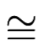
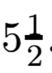
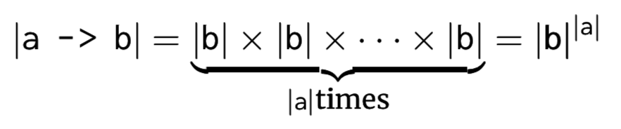
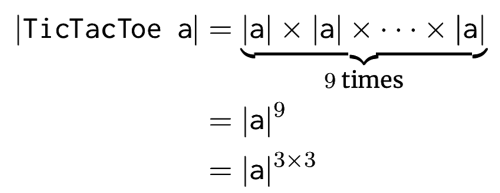
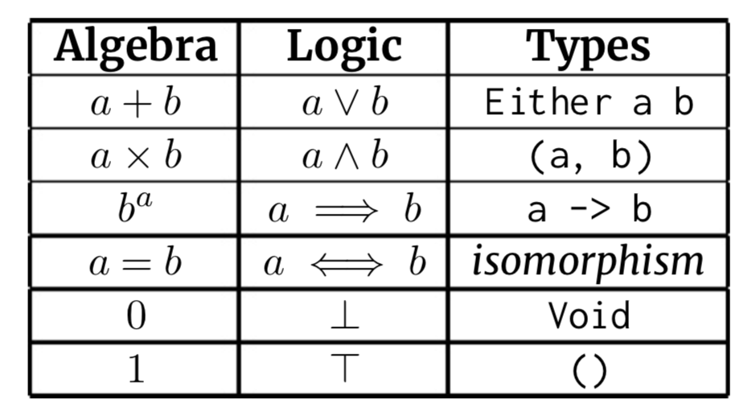
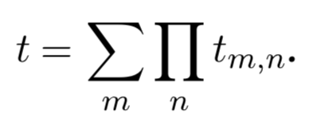

当人们说“但是大多数业务逻辑错误不是类型错误”时，我只想向他们展示如何将错误变成类型错误。– 马特·帕森斯
前言
正如我的许多项目所做的那样，开始思考类型是偶然的。 我失业，无聊，开始厌倦在Haskell聊天室里一遍又一遍地回答同样的问题。 因此，我开始写了一个快速文档，记下了许多我认为写博客文章会很有趣的类型级别的编程主题。
这份文档很快就变成了这些博客文章的外观概述，但是当我要把它拆成单独的文件时，我停了下来。 为什么不把它变成一本书呢？
我联系了一些朋友，看看是否有人对和我一起写它感兴趣。 一些小问题，但没有人有时间想献给这样的事情。 随后我的兴奋消失了，这个想法在后燃器上搁置了几个月。
但是我仍然失业，也很无聊，无论如何我发现自己在慢慢充实章节。 我写书的热情减弱了，但我仍然感到写书的欲望。 有一天，一个朋友让我写作，并敢于发表我的作品。我默许了。
如此一来，在2018年7月8日，我发布了一份长达37页的文档以表示感谢，以衡量社区是否对此书感兴趣。令我不断惊讶的是。响应比我预期的大100倍左右。各种各样的支持词和信件来了，其中许多人答应付钱给我，以便继续写信。
这对我来说足够了。我组建了Patreon，开始出售这本书的早期使用权，并开始参加比赛。承诺每周发布一次更新，再加上不想进行欺诈，这使我非常有动力完成本书。
这是保持专注的强大技术，我强烈推荐给比开始项目更擅长完成项目的任何人。
听起来陈词滥调，但是如果没有Haskell社区的大力支持，这本书就不可能实现。特别是要告诉我，即使是五年之后，我每天仍会从他们那里学习有关这种奇妙语言的新知识。
由Sandy Maguire用爱撰写. 2018
致谢
介绍
类型级编程是一个uncommon calling(不常见的调用)。尽管大多数程序员都在关注如何编译更多代码，但是我们类型级别的程序员正在尽最大努力防止代码被编译。
严格来说，类型的工作是双重的-它们防止（错误）事物进行编译，并且这样做有助于我们寻求更优雅的解决方案。 例如，如果有一个问题的解决方案有十种，而其中有九种的类型不好，那么我们不需要为正确的答案而费劲。
但是请不要误会-这本书主要是关于减少程序编译的环境。 如果您是Haskell的初学者程序员，感觉像GHC经常与您争论，经常发现难以理解的类型错误，那么本书可能不适合您。还没。
这本书是给谁的？我一直在努力争取的目标读者都是中级至精通这门语言的人。他们能够用Haskell解决真正的问题，而且不需要太多麻烦。他们不需要对ExceptT和在IO中抛出异常有强烈的意见，也不需要知道如何检查生成的Core来发现性能瓶颈。
但是目标读者应该对他们编写的程序有一种健康的不安感。
他们应该看看自己的註釋说”不要用n = 5调用此函数，因为它会崩溃”，并想知道是否有某种方法可以告诉编译器有关此的信息。读者应该紧张地盯着他们认为不可能发生的错误調用，但是必须让类型检查器感到满意。
简而言之，读者应该在寻找减少代码编译量的机会。
这并非出于受虐狂，混亂或任何类似的事情。而是，这种愿望来自慈善之地-现在，对类型检查器稍加沮丧比将难以发现的bug投入生产更可取。
类型级编程和其他编程一样，最好是适度的。在复杂性方面，它有自己的成本，因此应该谨慎使用。虽然你的金融应用程序每天处理数十亿美元非常关键，如果您的业余爱好视频游戏错误地绘制了一个游戏框架，那么它的重要性就降低了。在第一种情况下，可能有必要使用您拥有的任何工具以防止出现问题。 第二，这些技术可能过于笨拙。
Style是一个众所周知的很难教的东西, 在一个非常真实的意义上，Style似乎是我们从一门学科中提炼出所有我们知道如何教的东西之后剩下的东西。不幸的是，何时使用类型级编程在很大程度上是一个Style问题。接球并跑起来很容易，但是谨慎是神圣的。
如果有疑问，请不要在类型级别执行此操作。把这些技术留到那些出错会带来灾难性后果的情况下，留到一些类型级的东西会带来很大影响的情况下，留到那些可以极大地改进API的情况下。如果您的用例显然不是這些情況中的某一個，那么很有可能会有一种更干净、更简单的方法来处理值。
但是，让我们更多地讨论类型本身。
作为一个团体，我认为可以公平地说Haskellers是个反动派。我猜想，我们中的大多数人至少花了一个晚上的时间，试图向一个动态类型的同事颂扬一个强类型系统的优点。他们会说”我喜欢Ruby，因为类型不会妨碍我。”虽然作为强类型系统的支持者，我们的第一直觉可能是将我们的头脑强行连接到表上，但我认为这是一个值得牢记的批评。
作为Haskellers，我们当然对类型的值有很强的看法。它们是有用的，在编码、调试和重构时，它们确实发挥了巨大的作用。虽然我们可以一挥手，驳斥同事的抱怨，并证明他们以前从未见过”真正”的類型系统，但我们这样做对他们和我们自己都是一种伤害。这种轻率的反应是忽略他们的不開心的精神-类型常常会妨碍他们。我们只是学会了对这些缺点视而不见，而不是硬着头皮说，也许类型并不总是解决每个问题的办法。
Simon Peyton-Jones是Haskell的主要作者之一，他很快就承认了一个事实，即类型系统排除了大量无错误程序。例如，请考虑以下程序，该程序具有类型错误，但从未实际评估过它:
1 | fst ("no problems", True <> 17) |
因为类型错误被’fst’惰性忽略，所以在运行时对这样一个表达式的求值将很高兴地产生”no problems”.
尽管我们认为它的类型不正确，但实际上它的行为举止良好。 诚然, 这样的例子的有用性很低，但是重点仍然存在。types often do get in the way of perfectly reasonable programs.(类型经常会干扰完全合理的程序)。
有时，这种掩饰的幌子是”不清楚这东西应该是哪种类型”。C的printf函数是一个特别令人痛苦的案例：
1 | int printf (const char *format, ...) |
如果您从未有过使用printf的乐趣，它的工作原理如下: 它解析format参数，并使用其结构从调用堆栈中弹出其他参数。 您会看到，format的形状决定了上面的...中应填写哪些参数。
例如，格式字符串hello %s接受一个附加字符串，并将其插入到%s中。同样，说明符%d描述有符号十进制整数的插值。
以下对printf的调用均有效:
1 | • printf("hello %s", "world"), # "helloworld", |
请注意，按照书面规定，似乎不可能将Haskell-esque类型的签名分配给printf。由其省略号表示的其他参数由其第一个参数(字符串)的值指定类型。这种模式在动态类型的语言中很常见，对于printf而言，它无疑是有用的。
printf的文档很快提到了用户不能提供格式字符串，这样做会打开漏洞，攻击者可以在其中破坏内存并获得对系统的访问权限。 确实，这是一个非常普遍的问题，而且在任何有关软件安全的大学讲座中，制作这样的字符串通常都是第一个作业。
需要明确的是，当格式字符串的说明符与给定的其他参数不一致时，会出现printf中的漏洞。 以下对printf看起来无害的调用都是恶意的。
1 | • printf("%d"), 这可能会破坏堆栈. |
C的类型系统不足以描述printf。但是，由于printf是一个非常有用的函数，因此这并不是将其排除在语言之外的足够有说服力的理由。因此，对printf的调用有效地关闭了类型检查，以便有一块蛋糕也能吃。但是，这为未定义的行为和安全问题的形式打开了一个通道，类型错误可以使类型错误一直持续到运行时。
我的观点是，与”Null是十亿美元的错误”或当今流行的其他论点相比，防止安全漏洞是这类漏洞中更为重要的方面。我们将在第9章回到printf问题。
除了极少数的例外，Haskellers的普遍态度是忽略了病态程序的實用性。另一个令人不安的事实是：我们最喜欢的语言不能做其他语言所能做的有用的事情。
但是一切并没有丢失。事实上, 对于那些愿意努力学习如何做的人来说，Haskell能够表达奇怪类型的事物，例如printf。本书旨在成为一本全面的手册，以帮助您从这里开始，从一个称职的Haskell程序员到一个说服编译器为他们工作的人。
1. 类型背后的代数
1.1 Isomorphisms and Cardinalities(同构与基数)
函数式编程的一个杀手级特性是模式匹配，这是通过代数数据类型实现的。但是，这个术语不仅仅是我们可以进行模式匹配的事物的醒目的标题。顾名思义，代数数据类型背后其实有一个代数。
轻松理解和操纵此代数是一个强大的超能力-它使我们能够分析类型，为它们找到更方便的形式，并确定可以实现哪些操作(例如，类型类)。
首先，我们可以将每种类型与其基数联系起来——它拥有的inhabitants(居民/類型的實例的統稱)数量，忽略bottoms(底)。考虑以下简单的类型定义:
1 | data Void |
Void的居民为零，因此其基数为0。
单元类型()有一个居住者-因此其基数为1。这并不奇怪，但布尔具有基数2，对应于其构造函数True和False。
我们可以更正式地写这些关于基数的语句：
1 | |Void| = 0 |
具有相同基数的任何两种类型将始终彼此同构。类型s和t之间的同构定义为一对函数to和from。
1 | to :: s -> t |
这样，一个接一个地composing(构成)就可以让您回到起点。 换句话说，这样:
1 | to . from = id |
有时我们将类型s和t之间的同构写为: st.
如果两种类型具有相同的基数，则它们的元素之间的任何一对一映射都正好是这些to和from函数。但这样的映射从何而来？哪里都不重要！只需在每个类型上选择一个不一定与Ord实例对应的任意排序，然后将一个排序下的第一个元素映射到另一个排序下的第一个元素。Rinse(冲洗)并重复。
例如，我们可以定义一个具有基数为2的新类型:
1 | data Spin = Up | Down |
通过上面的论点，我们应该期望Spin等同于Bool。 的确是:
1 | boolToSpin1 :: Bool -> Spin |
但是请注意，Spin和Bool之间还有另一种同构:
1 | boolToSpin2 :: Bool -> Spin |
我们应该选择两种同构中的哪一种？有关系吗？
通常，对于基数为n的任何两种类型，它们之间有n!种唯一的同构。就数学而言，任何一个都和其他任何一个一样好 - 而且在大多数情况下，知道存在同构就足够了。
类型s和t之间的同构性证明了s和t都是同一件事。它们可能有不同的实例，但这更多是关于Haskell的typeclass的陈述，而不是关于s和t的等价关系。
同构是类型代数中一个特别强大的概念。在本书中，我们将通过同构进行推理，所以最好现在就comfortable(熟悉)这个想法。
1.2 求和，乘积和指数类型
用cardinalities(基数)的语言，sum(求和)类型对应于加法。 这些的典型示例是Either a b，要么是一個a，要么是一個b。因此，a b的基数(记住,inhabitants的数量)是a的基数加上b的基数。
1 | |Either a b| = |a| + |b| |
如您所料，这就是为什么将这些称为sum类型的原因。添加后的直觉可以推广到具有多个构造函数的任何数据类型-类型的基数始终是其构造函数的基数之和。
1 | data Deal a b = This a |
我们可以分析Deal的基数:
1 | |Deal a b| = |a| + |b| + |Bool| |
我们也可以看一下Maybe a的基数。由于无效数据构造函数对构建没有兴趣 - 仅存在一个Nothing(无)，因此Maybe a的基数可以表示为:
1 | |Maybe a| = 1 + |a| |
Dual(双重)sum类型是所谓的product(乘积)类型。再次,我们将首先看一下规范示例 - pair(对)类型(a，b).
类似地，product类型的基数是其基数的乘积。
1 | |(a, b)| = |a| × |b| |
为了说明，考虑形式的混合分数。我们可以通过product类型在Haskell中表示它们。
1 | data MixedFraction a = Fraction |
并执行其基数分析，如下所示:
1 | |MixedFraction a| = |Word8| × |a| × |a| = 256 × |a| × |a| |
所有这些基数的有趣结果是，我们发现自己能够根据类型表达数学真理。例如，我们可以通过显示(a，())与a之间的同构来证明a × 1 = a.
1 | prodUnitTo :: a -> (a, ()) |
在这里，我们可以把unit(单元)类型看作是product类型的一个monoidal identity(单态恒等式)，也就是说”sticking it in doesn’t change anything"(坚持下去不会改变任何事情)”. 因为a × 1 = a，我们可以根据需要与任意多个unit类型配对。
同样地，Void充当sum类型的monoidal unit(单态單元)。为了让我们相信这一点，我们可以将a + 0 = a这个琐碎的语句看作是Either a Void和a之间的同构。
1 | sumUnitTo :: Either a Void -> a |
函数absurd在1⃣️处的类型为Void -> a。这有点虚张声势，说”如果您给我一个Void，我可以给您您想要的任何东西。” 尽管这是个谎言，但由于一开始就没有Voids，所以我们无法反驳。
函数类型还具有关于基数的编码方式，它们对应于exponentialization(指数化)。举个例子，这里正好有4(2^2)個Bool -> Bool类型的居民，这些函数是id，not，const True和const False。尽可能地努力，但是在Bools之间找不到其他任何纯函数！
更一般地，类型a -> b具有基数|b|^|a|。尽管起初这可能令人惊讶 -it always seems backwards to me(在我看来似乎总是倒退)-该argument(论点/參數)是straightforward(很直接的)。对于域中a的每个值，我们需要退返回b。但是我们可以为a的每个值选择b的任何值，从而得到以下相等性:

练习1.2-i: 确定
Either Bool (Bool, Maybe Bool) -> Bool的基数.
好奇的读者可能想知道减法，除法和其他数学运算在应用于类型时是否有意义。但这样的事情即使不是不可能，也很难用Haskell来表达。减法对应于删除了特定值的类型，而类型的除法使它的某些值相等（就相等定义的意义而言，而不是使它们相等的Eq实例）。
实际上，即使是微积分中的微分概念在类型领域也具有意义。 尽管我们不再赘述，但还是鼓励有兴趣的读者参考Conor McBride的论文The Derivative of a Regular Type is its Type of One-Hole Contexts(常规类型的导数是它的单孔上下文类型)[8]。
1.3 示例：Tic-Tac-Toe
我之前说过，能够操纵类型背后的代数是强大的超级大国。让我们证明一下。想象一下我们想写一个tic-tac-toe游戏。标准的tic-tac共有9个空格，我们可以像这样天真地实现:
1 | data TicTacToe a = TicTacToe |
尽管这样的事情行之有效，但要进行编程却相当笨拙。 例如，如果我们要构建一个空板，则有很多东西要填。
1 | emptyBoard :: TicTacToe (Maybe Bool) |
编写像checkWinner这样的函数会更加复杂。
与其经历所有这些麻烦，我们可以利用我们的类型代数知识来提供帮助。第一步是对TicTacToe执行基数分析:

当这样写的时候，我们看到TicTacToe与函数(Three，Three) -> a或它的咖喱形式：Three -> Three -> a同构。当然，Three是具有三个inhabitants(居民)的任何类型。也许看起来像这样:
1 | data Three = One | Two | Three |
由于这种同构，我们可以改用以下形式表示TicTacToe:
1 | data TicTacToe a = TicTacToe2 { |
从而简化了对emptyBoard的实现:
1 | emptyBoard :: TicTacToe2 (Maybe Bool) |
这样的转变不会让我们做任何其他我们做不到的事情，但它确实大大改善了人体工程学。
通过这样的改变，我们得到了整个组合函数工具箱的回报；我们获得了更好的组合性，并且需要支付更少的认知负担。
让我们不要忘记，编程主要是人类的工作，而人体工程学的确是值得追求的。 您的同事和合作者稍后会感谢您！
1.4 Curry–Howard同构
下表总结了我们之前对类型及其基数之间代数关系的讨论。

该表本身在数学和类型之间形成了更普遍的同构。它被称为Curry-Howard同构，即宽松地指出逻辑中的每个语句都等同于某些计算机程序，反之亦然。 Philip Wadler以propositions as types的名字推广了Curry–Howard。
Curry–Howard同构是对我们宇宙的深刻见解。它使我们能够通过函数式编程的角度来分析数学定理。更好的是，当表达为类型时，甚至连”无聊的”数学定理也很有趣。
为了说明这一点，考虑定理a ^ 1 = a。当通过Curry–Howard查看时，它描述了() -> a和a之间的同构。换句话说，该定理表明在拥有一个值和拥有一个计算该值的(纯)程序之间没有区别。这种洞察力是为什么编写Haskell与其他编程语言相比如此令人喜悦的背后的核心原则。
练习 1.4-i：
使用Curry-Howard证明a ^ b × a ^ c = a ^ (b + c)的指数定律。也就是说，提供类型为(b -> a) -> (c -> a) -> Either b c -> a和(Either b c -> a) -> (b -> a, c -> a)之一的函数。
练习 1.4-ii：
证明(a x b) ^ c =a ^ c × b ^ c
练习 1.4-iii：
给出(a ^ b) ^ c = a ^ (b × c)的证明，这是否使您想起Prelude中的任何内容？
1.5 规范表示
具有相同基数的任何两种类型都是同构的直接推论是，存在多种表示任何给定类型的方法。尽管您不一定要让它改变类型建模的方式，但最好记住您有一个选择。
由于同构，一个类型的所有这些表示都与任何其他类型的表示”一样好”。
然而，正如我们将在145页上看到的, working with types generically(通常使用类型时)使用conventional form(常规形式)会很有用。这种canonical representation(规范表示)被称为products的sum，指的是形式的任何类型t:

大Σ表示加法，而Π表示乘法-因此我们可以将其理解为”外加法，内乘法”。我们还规定，所有加法必须通过Either表示，并且乘法必须通过(,)表示。不用担心，写出这样的规则会使它看起来比实际复杂得多。
所有这些都意味着以下每种类型均以其规范表示形式:
- ()
- Either a b
- Either (a, b) (c, d)
- Either a (Either b (c, d))
- a -> b
- (a, b)
- (a, Int) – 我们对
numeric(数值)类型的规则做了一个例外，因为要把它们表达成一个sums，工作量太大了。
但是以下两种类型均未以规范的形式表示:
- (a, Bool)
- (a, Either (b, c))
例如，Maybe a的规范表示是Either a ()。重申一遍，这并不意味着您更喜欢使用Either a ()而不是Maybe a。现在知道这两种类型是等效的就足够了。我们将在第13章中返回规范形式。
2. Terms, Types and Kinds(术语，类型和种类)
2.1 Kind 系統
在日常的Haskell编程中，基本的构造块是那些terms和types。 Terms是您可以操纵的值，即在运行时存在的事物。Types只不过是健全性检查：向编译器(和我们自己)证明，我们试图编写的程序具有一定意义。
完全类似地，类型级编程的基本构造块是types和kinds。types现在变成了要操纵的东西，而kinds则成为我们用来保持诚实的证据。
如果您不熟悉kind系统，则可以合理地将其描述为类型的类型系统。因此，按照这种推理方式，kinds松散地称为类型的种类(当我们稍后在第15章中查看-XTypeInType扩展时，尤其如此).
考虑数字4和5，两者均为Int类型。就编译器而言，我们可以在程序中将4的每个实例替换为5，然后整个程序将继续编译。程序本身可能做一些不同的事情，但是由于两者都是Int类型，因此4和5可以互换-至少就类型检查器而言。
2.1.1 类型的种类
在继续讨论之前，我们必须避开一个潜在的混乱点。相当令人费解的是, type一词有几种相关的含义。我们将需要对两者进行区分。
type一词可用于描述在类型级别存在的任何事物，也就是说，任何既不是term也不是kind的事物。
但是，我们也可以引用TYPEs，它是具有inhabitants(居民)的types的kind。历史上，TYPE被写为*，但是此较旧的符号将在最新版本的GHC中弃用。TYPE是类似Int和Maybe Bool之类的东西的kind，它对运行时存在的事物进行分类。某些不是TYPE kind的东西是Maybe(没有类型参数)和Show。
Sometimes we call the sorts of things which have kind TYPE value types.(有时我们称这类具有kind TYPE value types的事物。)
在本书中，我们将在SMALLCAPS中对kinds进行排版，以便将它们与常规类型区分开。请注意，这只是打印过程的一种惯例-在Haskell源文件中，TYPE kind仍应写为Type。
2.1.2 Arrow种类
本书假定您已经对Haskell的kinds，TYPE和(→)标准有所了解。因此，在这里我们将不做任何超出严格必要的事情。